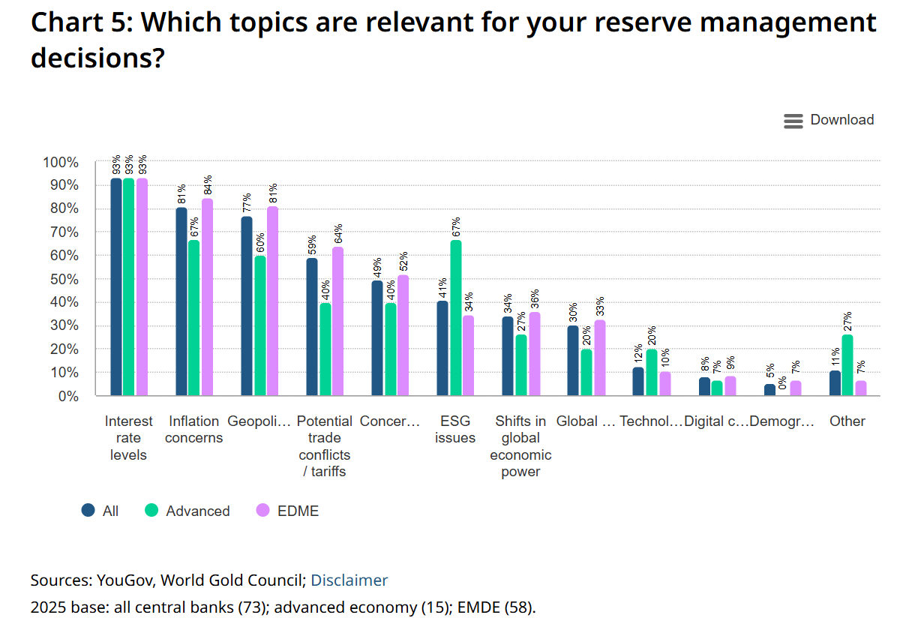

美元汇率主导因素的转变#

上图是前东北证券首席经济学家付鹏的个人财经节目《付鹏说》中在 2025 年初的一次视频内容中，从各国的央行基准利率推测中长期的汇率市场走势。付鹏是 FICC 交易员出身，其观点和分析方法论相比其他首席经济学家更对交易员胃口，此前道听途说他就是因为本人能力问题而无法继续胜任交易员的职位才借助背景因素转而做首席经济学家，但毕竟是听闻，而此次我是真正发现他的预测结果与事实截然相反。
从上图的发布时间到现在撰写本文的时间，中间间隔超过了接近 2 个季度，已经符合中期这个时间周期的标准。图中给出的预测是 Fed 在 2025 年由于美国的经济韧性甚至有可能不会降息，而 ECB 和其他各主要发达经济体因为经济问题相比 Fed 会大幅降息，这些预测在 2025 年中看来是完全正确的，但是汇率走势却截然相反，美元指数在 H1 的跌幅超过 10%（见下图）。为什么会出现这样的结果？目前猜想原因可能是美元兑非美货币的主导因素发生了转变。
在宏观事件较少的周期，影响汇率的主要因素是实际利差，美国的实际利率高于非美经济体的实际利率，则美元偏强，反之则偏弱。但是在美国与德国的实际利差没有太大变化时，USDEUR 却大幅下跌，说明主要驱动原因并不是实际利差，以下表格来自于 GPT 的总结：
类别 |
说明 |
关键词与指标 |
|---|---|---|
1. 利差与货币政策 |
汇率的短中期主要驱动力。利率差影响跨境资金流向。 |
名义/实际利差、央行基准利率、政策预期、前瞻指引、通胀 |
2. 经济基本面与增长前景 |
一国经济健康程度决定其货币长期吸引力与价值锚。 |
GDP 增速、就业、PMI、零售、财政状况、生产率 |
3. 国际收支与贸易结构 |
汇率长期均衡的重要基础。顺差货币倾向升值，逆差货币需外部融资。 |
经常账户、资本账户、外汇储备、商品出口依赖、能源结构 |
4. 主权信用与政治风险 |
主权信用越高，货币越可信。政局动荡会引发资本外逃。 |
债务/GDP、赤字、评级、地缘政治事件、政策稳定性 |
5. 市场行为与全球流动性 |
汇率的短期波动常由情绪、避险、资金流驱动，非理性但极其重要。 |
避险情绪（VIX）、美股走势、黄金、央行干预、热钱流动、美元流动性周期 |
结合以下 World Gold Council 发布的 Central Bank Gold Reserves Survey 2025 中的部分图表来看，对美元的需求减弱有上表中（1）的原因，因为担忧美国继续大规模增加财政赤字导致的通胀结构性上升；有上表中（3）的原因，D. Trump 再次当选总统制定了各种国际贸易再平衡政策；有上表中（4）的原因，因为担忧地缘政治风险和美国债务违约风险。

（1）（3）是中短期的驱动原因，（4）是长期因素。因此美元兑非美货币的主要逻辑已经从（1）占绝对主导权转移到多种原因综合主导，这也是只从央行基准汇率和通胀计算得到的实际利差来预测后市汇率走势不能更好地反映现实情况的原因。
2025.7.6